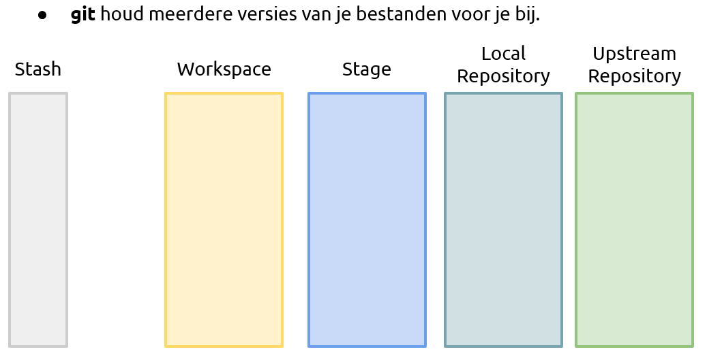

GIT kan wijzigingen in tekst bestanden herkennen en opslaan. Op die manier is het makkelijk om bij te houden wat er veranderd is gedurende het project en ook wie die wijzigingen gemaakt heeft.
GIT houdt die informatie bij in de .git map.
Dit is in principe een soort database met alle informatie er in
over de inhoud, de wijzigingen en de status van alle bestanden
in de "Working Directory".
Alle andere GIT folders bestaan alleen in de database.

In de staging area worden alle bestanden die horen bij een wijziging verzameld zodat de hele wijziging als
één set toegevoegd worden aan de local repository. Voorzien van het juiste commentaar.
Daarna is er de optie om de wijziging door te sturen naar de upstream repository. Dat kan een eigen GIT server zijn, of natuurlijk github.com
git status
GIT status laat zien hoe de working directory er aan toe is. Het kan zijn dat je halverwege een wijziging bent. (Er zijn dan nog dingen om naar de locale repository te sturen.) Of de working directory is helemaal schoon. "Nothing to commit" Dat is de status die nodig is om aan een nieuwe wijziging te beginnnen.
git add jouwbestand git add jouwanderebestand enz.
Nadat je een wijziging hebt doorgevoerd wil je de gewijzigde bestanden toevoegen aan de repository.
Het is heel verleidelijk om ieder bestand gewoon stuk voor stuk toe te voegen, maar één wijziging die over meerdere bestanden verdeeld is wil je ook op die manier opslaan.
git status
Wacht even deze hadden we toch al gehad?
Ja, dat klopt. Na het stagen van alle bestanden wil je checken dat je niks vergeten bent. Je MOET nogmaals git status uitvoeren om dat te bevestigen.
Anders moet je alsnog een tweede stage en commit doen en dat proberen we juist te voorkomen.
git commit -m "Beschrijf jouw wijzigingen"
Met dit commando worden de wijzigingen in de benodigde bestanden
opgeslagen in de repository.
Het belangrijkste hierbij is dat je duidelijk beschrijft wat je gewijzigd hebt. Zodat deze set van updates makkelijk terug gevonden kan worden.
Gedetaileerd commentaar zal waarschijnlijk in het document zelf gefonden worden.